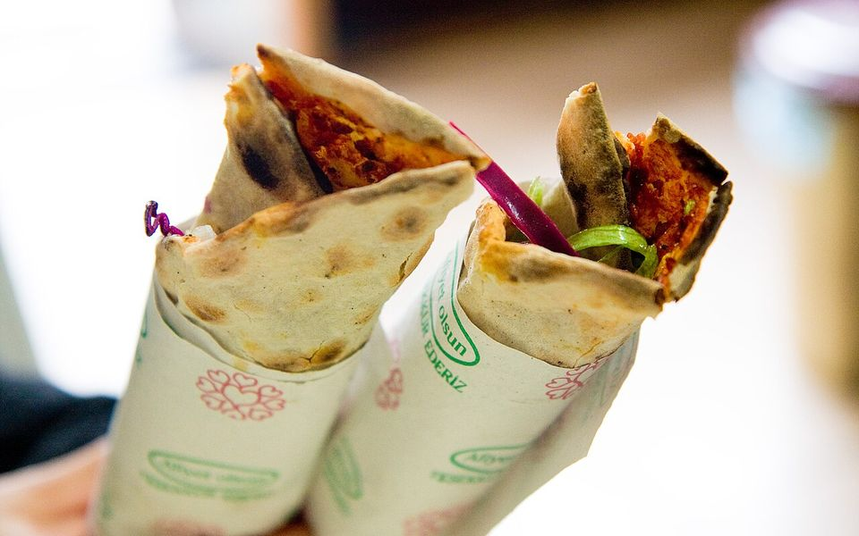
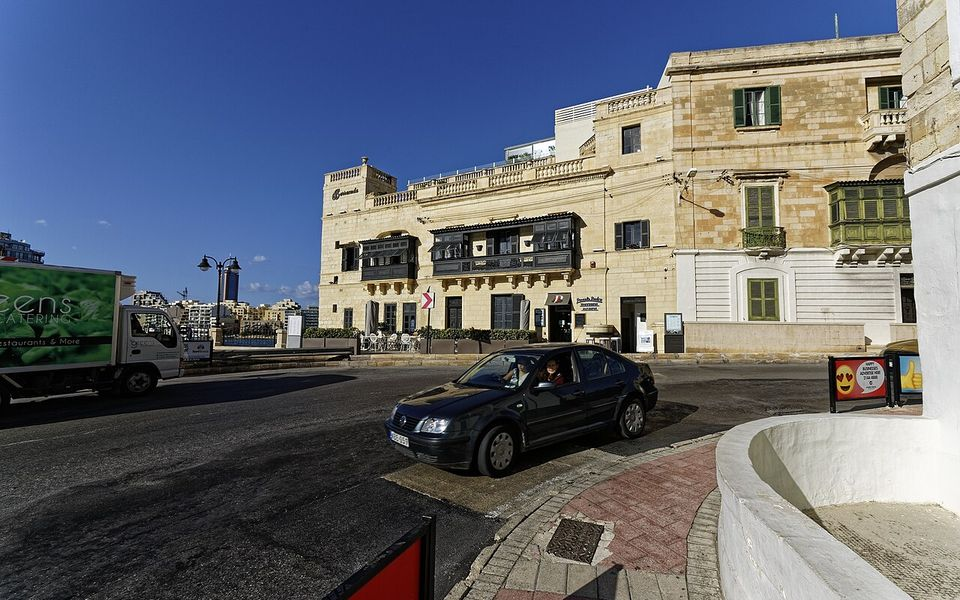

1
1Malta oggi · Blue consiglia · 25 novembre 2026
Lahmacun: cos'è, da dove viene e tre posti dove mangiarlo a Malta
Una sfoglia sottilissima con carne macinata speziata, arrotolata con prezzemolo e limone. La sua storia va dall'Aleppo medievale a Gaziantep, ed ecco tre posti che la servono a Malta.
A cura di CompareMalta.ai

Foto: Rainer Zenz, CC BY-SA 3.0, Wikimedia Commons
Il lahmacun è una sfoglia tonda sottilissima coperta di carne macinata (di solito manzo o agnello), cipolla, pomodoro, peperoni ed erbe, cotta in pochi minuti in un forno caldissimo. Lo chiamano spesso "pizza turca", ma non ha formaggio né salsa e la base è molto più sottile. Il modo classico: limone spremuto sopra, prezzemolo e cipolla, si arrotola e si mangia con le mani, spesso con un bicchiere di ayran.
Il nome viene dall'arabo laḥm bi-ʿajīn, "carne con pasta". La più antica ricetta scritta simile risale all'Aleppo del XIII secolo e il viaggiatore ottomano Evliya Çelebi lo citò tra i cibi notevoli di Damasco. Oggi è amato in Turchia, Armenia, Libano e Siria, con stili regionali: quello di Antep usa l'aglio, quello di Urfa la cipolla, e lo stile di Aleppo aggiunge melassa di melograno. Nel 2025 l'Unione europea ha registrato il lahmacun di Gaziantep come indicazione geografica protetta.
Tre stili regionali
1Aleppo style
Agrodolce grazie alla melassa di melograno, il più vicino alle radici levantine del piatto.
Dove mangiarlo a Malta
Elenchiamo solo locali dove il lahmacun è oggi nel menu. Non esiste una classifica ufficiale, quindi l'ordine è nostro: quanto è facile trovarlo, poi cosa dicono i clienti. Kebab Factory è un ristorante in evidenza su CompareMalta.ai.

4Kebab Factory
Catena turca fondata a Malta nel 2019, con il lahmacun come piatto chiave di un menu fatto di döner, kebab, pizza turca e baklava. I clienti delle sedi di Msida e St Julian's citano proprio il lahmacun, e con sette sedi è il modo più semplice per provarlo ovunque sull'isola.
Foto: Garrett Ziegler, CC BY-SA 4.0, Wikimedia Commons
5
Moo's Kebab
Il lahmacun è nella sezione pide del menu, accanto alle pizze turche. La sede di Gżira su The Strand è uno dei locali turchi più recensiti dell'isola, con 4,5 su 5 da 571 recensioni su Tripadvisor, e c'è una seconda sede a La Valletta.
Foto: Freddyolsson, CC BY-SA 4.0, Wikimedia Commons

6Kebab Bistro
Un bistrot turco su Tower Road, con un lahmacun secondo la ricetta classica di manzo macinato, pomodoro, cipolla, aglio, prezzemolo ed erbe, tra i piatti più ordinati a domicilio. Ideale per un pasto turco seduti a Sliema, con zuppe, pide e grigliate.
Foto: Txllxt TxllxT, CC BY-SA 4.0, Wikimedia Commons
Consiglio: ordinalo con limone ed erbe fresche e mangialo subito, finché la base è croccante. Menu e orari cambiano: verifica con il ristorante prima di andare.
Fonti: Wikipedia: Lahmacun · Kebab Factory: about us · Guide Me Malta: Kebab Factory Msida · Tripadvisor: Turkish food in Malta · Wolt: Moo's Kebab Gżira · Wolt: Kebab Bistro Sliema